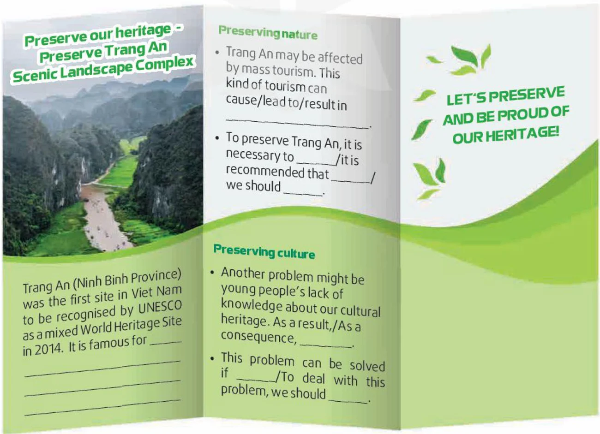

A leaflet to preserve Trang An
Lesson 6 — Writing
6Explore → learn → plan → create
- 🔍
Explore
what makes a good leaflet
- 📚
Learn
problem and solution language
- 🗂️
Plan
problems and realistic actions
- ✍️
Create
write and peer-check a leaflet
Warm-up
Spot the problems
5 minutesWhat is threatening our heritage?
1 · 2 · 3 · 4 1 problem (litter) · 2 solution (clean-up) · 3 problem (forgotten traditions) · 4 solution (sharing stories)
A tri-fold leaflet
- 📰
Catchy heading
the topic in a few words
- 📌
Short key points
problems and consequences
- 📣
Solutions & action
what we can do
Before writing
Ideas and language
14 minutesOptions A–D
A. educating young people about the importance of heritage
B. damaging the ecosystem
C. loss of cultural values
D. organising eco-tours to natural heritage sites
Problems: negative effects of mass tourism
• polluting the rivers and valleys · (1) ______ B · damaging the ecosystem
Solutions: (2) ______ · creating a sustainable habitat suitable for local wildlife D · organising eco-tours to natural heritage sites
Problems: young people’s lack of knowledge about the cultural heritage
• not able to appreciate traditions · (3) ______ C · loss of cultural values
Solutions: (4) ______ · promoting heritage values on social media A · educating young people about the importance of heritage
Problems and solutions
Problems → consequences
… causes / leads to / results in …
As a result, … · As a consequence, … · Consequently, …
Solutions
It is necessary to … · It is recommended that …
This problem can be solved if … · To deal with this problem, we should …
Eight tips
1. Brand ______ and logo colours
2. Make it ______: the purpose of the leaflet different
3. ______ is the leaflet for? who
4. Speak ______ to people · 5. The right spacing directly
6. Eye-catching, ______ imagery · 7. The power of persuasion useful
8. Call to ______ actions
While writing
Task 2 · your leaflet
16 minutesUse the ideas in 1 and the outline

Preserve our heritage – Preserve Trang An
Trang An (Ninh Binh Province) was the first site in Viet Nam to be recognised by UNESCO as a mixed World Heritage Site in 2014. It is famous for its natural beauty and rich biodiversity.
Preserving nature: Trang An is affected by mass tourism. This kind of tourism can pollute rivers and valleys. It can also damage the ecosystem. To preserve Trang An, it is necessary to organise eco-tours. We should also create a sustainable habitat for wildlife.
Preserve our heritage – Preserve Trang An
Preserving culture: Another problem is young people’s lack of knowledge about our cultural heritage. As a result, they are not able to appreciate our traditions.
This problem can be solved if schools teach the importance of heritage. Our heritage values should also be promoted on social media so that they reach wider audiences.
Let’s preserve and be proud of our heritage!
After writing
Swap, check, improve
7 minutesGive useful feedback
- 🧩
Content
natural AND cultural heritage?
- 🗂️
Organisation
problems → solutions easy to follow?
- ✍️
Language
clear and accurate?
- 🎨
Design
attractive and readable?
Rubric: organisation · legibility · ideas · word choice · grammar — 10 points each.
One lesson, three takeaways
- ⚠️
one heritage problem
- 🛠️
one practical solution
- 📣
one persuasive phrase
Homework
1. Finish and design your leaflet.
2. Do the Writing exercises in the workbook.
3. Get ready for Lesson 7 — Communication and Culture.